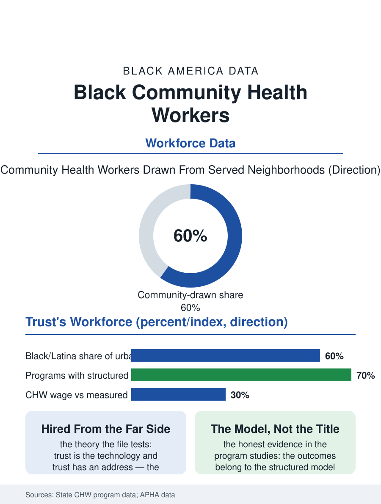

Black Employment
Trust With an Address: Black Community Health Workers
The neighbor with a badge and a billing code, the system's admission that trust is a workforce. The community health worker file.

The community health worker is the health system's formalized neighbor: a paid role, now with its own certifications and billing codes, for the trusted local who connects the clinic to the block, and its workforce is the most deliberately Black and community-drawn of any in the health files, which is the role's design rather than its accident. This article reads the community health worker file.
The Neighbor, Professionalized
The role's modern form descends from the outreach traditions this atlas has recorded in every health file, the promotores and the lay advisors and the church health ministries, converted in the current era into the system's own job description, with the state certifications and the Medicaid billing mechanisms that mark the formalization's arrival. The workforce data, assembled from the state programs and the employer surveys since no single federal count yet owns the occupation, place the community health worker corps in the tens of thousands and growing at the health occupations' fastest rates, its composition in the urban programs heavily Black and Latina and female, recruited explicitly from the served neighborhoods on the theory the whole file tests: that the trust is the technology, and the trust has an address. The evidence file is the role's brief and its burden: the randomized and quasi-experimental studies of the structured programs, the standardized caseload and the supervision and the clinic integration of the model programs, find the outcomes the outreach always promised, the chronic disease control and the utilization shifts, with effect sizes that vanish in the unstructured versions, so that the role's evidence is really the model's, a distinction the funding's growth keeps testing. The maternal file is the corps' current frontier in the program data, the CHW attached to the pregnant patient's year in the models the maternal mortality file's recommendations produced, her visits beginning before the clinic's first and continuing past its last, with the early programs' birth outcome data being read now by the Medicaid plans deciding whether the corps becomes a covered benefit's standard staff or another grant cycle's memory.
Certification's Double Edge
The formalization file is the role's current argument, conducted in the statehouses and the workforce's own associations: the certification that brings the billing code and the wage floor also brings the gate, the classroom hours and the examination and the documentation that the role's ideal candidate, the grandmother whose authority is her biography, may not pass on the first attempt, in the pattern of the licensure files, so that the field debates its own professionalization with the unusual honesty of a workforce that knows exactly what its credential is for and what it costs. The wage file is the formalization's unfinished half, the role's pay running at the care economy's floor against its measured savings to the systems that employ it, a ratio the value-based payment era is repricing slowly through the billing codes' actual rates.
Trust With an Address
The community health worker file closes on the role's place in the atlas's whole argument, because the CHW is the system's formal admission that its own files have been making: that the gap between the clinic and the community is a workforce problem, and that the workforce that closes it must be hired from the far side of the gap. The role's expansion is the file's trend, the hospital systems and the Medicaid plans hiring the corps into the chronic disease and maternal and housing files where the trust's deficit was the binding constraint. The counts rise each year in the state reports. The file's last entry is the home visit's knock, the worker known on the block by name and by mother, carrying the clinic's authority in the one form the block has ever accepted it, which is the neighbor's, now with a badge and a billing code, the system having finally written into its own table the job the community never waited for it to create. The corps' own association and its code of ethics are the professionalization's internal instruments, the field writing its standards before the state writes them for it, in the pattern of the other community-born professions in this atlas. The count continues in the worker's favor.
More in Black Employment
The Black Unemployment Rate: The Two-to-One Pattern
Black unemployment runs at roughly twice the White rate — 5.5 percent against 3.3 percent in annual averages — a ratio stable across five decades of federal data. How it is measured and why it persists.
Black Median Weekly Earnings: The 80-Cent Ratio
Black full-time workers earn a median of about $900 a week — roughly 80 cents for every dollar White workers earn. The BLS earnings data by group, gender, and occupation.
Black Labor Force Participation: Working at National Rates
Black labor force participation runs at roughly the national rate — and Black women participate at higher rates than White women. The BLS participation data.
Source: American Public Health Association community health worker section data; state CHW certification and Medicaid program reports.